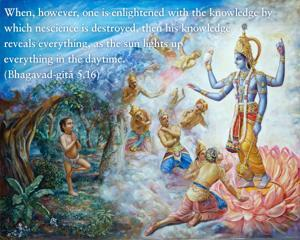

When, however, one is enlightened with the knowledge by which nescience is destroyed, then his knowledge reveals everything, as the sun lights up everything in the daytime.

Those who have forgotten Kṛṣṇa must certainly be bewildered, but those who are in Kṛṣṇa consciousness are not bewildered at all. It is stated in the Bhagavad-gītā, sarvaṁ jñāna-plavena, jñānāgniḥ sarva-karmāṇi and na hi jñānena sadṛśam. Knowledge is always highly esteemed. And what is that knowledge? Perfect knowledge is achieved when one surrenders unto Kṛṣṇa, as is said in the Seventh Chapter, nineteenth verse: bahūnāṁ janmanām ante jñānavān māṁ prapadyate. After passing through many, many births, when one perfect in knowledge surrenders unto Kṛṣṇa, or when one attains Kṛṣṇa consciousness, then everything is revealed to him, as everything is revealed by the sun in the daytime. The living entity is bewildered in so many ways. For instance, when he unceremoniously thinks himself God, he actually falls into the last snare of nescience. If a living entity is God, then how can he become bewildered by nescience? Does God become bewildered by nescience? If so, then nescience, or Satan, is greater than God. Real knowledge can be obtained from a person who is in perfect Kṛṣṇa consciousness. Therefore, one has to seek out such a bona fide spiritual master and, under him, learn what Kṛṣṇa consciousness is, for Kṛṣṇa consciousness will certainly drive away all nescience, as the sun drives away darkness. Even though a person may be in full knowledge that he is not this body but is transcendental to the body, he still may not be able to discriminate between the soul and the Supersoul. However, he can know everything well if he cares to take shelter of the perfect, bona fide Kṛṣṇa conscious spiritual master. One can know God and one’s relationship with God only when one actually meets a representative of God. A representative of God never claims that he is God, although he is paid all the respect ordinarily paid to God because he has knowledge of God. One has to learn the distinction between God and the living entity. Lord Śrī Kṛṣṇa therefore stated in the Second Chapter (2.12) that every living being is individual and that the Lord also is individual. They were all individuals in the past, they are individuals at present, and they will continue to be individuals in the future, even after liberation. At night we see everything as one in the darkness, but in day, when the sun is up, we see everything in its real identity. Identity with individuality in spiritual life is real knowledge.